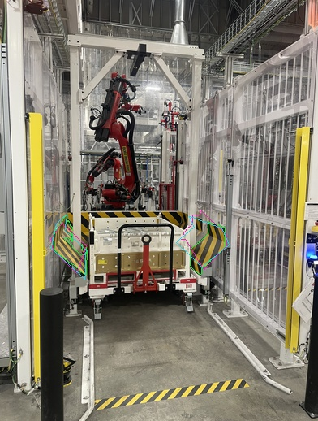
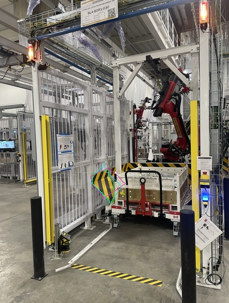
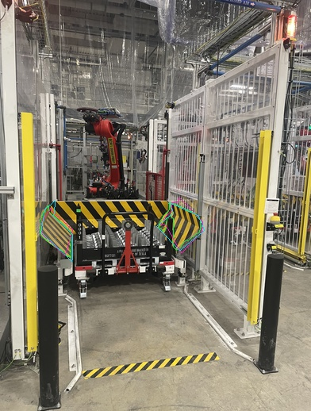
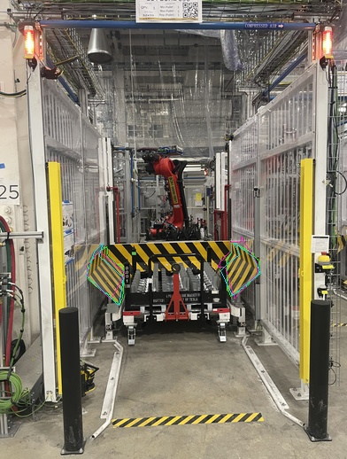
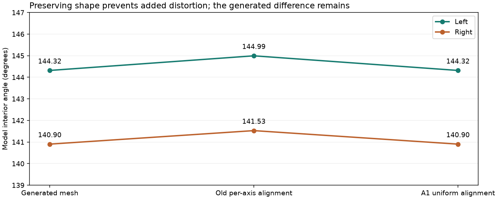
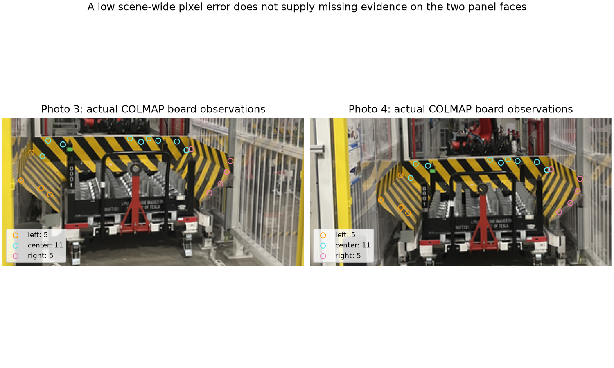
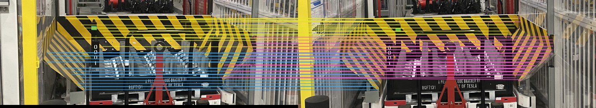

PANOPTES · 四张照片 · 同一批输入对照
模型已一致，真实夹角仍无法唯一确定
左右双片模型共用 104.27°，相等由用户同规格先验施加，并按源照片轮廓拟合。离散检查中的 104.27°、120.00°、150.00°、174.00° 通过照片贴合门槛；这不是连续区间或置信区间，也不能确定真实角度。中间板保持 A1。耗时为缓存输入增量。
打开完整可点击 3D 模型
A4 · 同角先验下的源照片轮廓拟合
已作为先验约束模型显示在主场景；实物角度仍不可唯一确定。
左右模型从求解开始共用一个夹角参数，当前选中 104.27°。相等来自用户提供的同规格先验。生成总成的分片仅初始化姿态与轮廓；目标函数使用源照片分割轮廓，分别重新拟合两板姿态和可见轮廓尺寸；中间板保持 A1。
仍通过照片贴合检查的离散角度：104.27°、120.00°、150.00°、174.00°。这是固定相机、有限模板边界下的敏感性检查，不是连续范围或统计置信区间。检查完成：是。
选择依据：相对 A1 的逐板均值、中位数、逐图 IoU 门槛及收敛/模型注释检查均通过。
逐板逐图 IoU 对照
IoU 为轮廓重合度，不是厘米或角度精度。下表保留下降的视图；缺少有效板实例的照片不计入该板。
| 板 | 照片 | A1 | 双片初值 | A4 | 相对 A1 |
|---|
| 左 | 1 | 0.581 | 0.572 | 0.675 | +0.094 |
| 左 | 2 | 0.597 | 0.594 | 0.727 | +0.130 |
| 左 | 3 | 0.727 | 0.702 | 0.785 | +0.058 |
| 左 | 4 | 0.762 | 0.750 | 0.725 | -0.037 |
| 右 | 1 | 0.503 | 0.527 | 0.537 | +0.033 |
| 右 | 3 | 0.669 | 0.636 | 0.712 | +0.043 |
| 右 | 4 | 0.772 | 0.764 | 0.776 | +0.005 |
离散角度敏感性检查（非置信区间）
| 模型角度 | 优化状态 | 左 / 右平均 IoU | 照片贴合门槛 |
|---|
| 30.00° | fit | 0.741 / 0.687 | 未通过 |
| 60.00° | fit | 0.754 / 0.683 | 未通过 |
| 90.00° | fit | 0.738 / 0.658 | 未通过 |
| 104.27° | fit | 0.728 / 0.675 | 通过 |
| 120.00° | fit | 0.713 / 0.694 | 通过 |
| 150.00° | fit | 0.730 / 0.694 | 通过 |
| 174.00° | fit | 0.720 / 0.683 | 通过 |
绿色：源照片轮廓；紫红：A1；青色：先验约束候选。

照片 1
照片 2
照片 3
照片 4A4 缓存输入上的优化增量 44.04 秒；不是一次从照片开始的完整流程耗时。完整结果、参数边界与限制
历史对照 1 · A1 保形对齐
保形对齐
左 144.32° / 右 140.90°，差 3.41°。中间板仍不报可用夹角。
原版差 3.47°；这项改动避免继续改变模型夹角，尚未消除生成几何中的差异。
照片贴合与速度
照片 3/4 重合度 0.821 / 0.760；原版为 0.821 / 0.754。
对齐 1.51 秒。贴合基本保持；重合度不等于物理测量精度。

历史对照 2 · 相机优化改善了什么
COLMAP 在四图中得到 676 个真实匹配点。拟合重投影误差从 1.38 px 降到 0.33 px（1554 px 高的处理图）。这是参与拟合的误差，不能用作独立精度证明。
LIMAP 点线联合优化也已执行。scene：2 条稳定 3D 线；guard-only：0 条稳定 3D 线。少量场景线不能证明护板两面的夹角已恢复。

LoFTR 密集匹配
两块 GPU 并行匹配六对照片；去重后护板轨迹数：left 25 / center 33 / right 44。有效护板轨迹仅连接照片 3/4，尚未形成独立第三视角的验证。匹配增加不等于角度已经可用。

历史对照 3 · 各条几何路线的实际结果
A2 左右独立求解；A3 在相同观测上尝试共享夹角。没有足够支持的路线不会把强制相等当成测准。历史实验候选模型可下载；主场景的左右板已采用上方 A4 先验约束模型，中间板保持 A1。
展开 12 条路线的结果、模型与失败原因
4. 本轮耗时与花费
原完整照片流程实测 334.6 秒。本轮重用这次运行的相机初值、分割及生成模型，比较几何增量；未把缓存对照耗时冒充一次全流程速度。
COLMAP 增量 19.1 秒；各临时云容器实际工作时段 29.8, 14.7, 50.9, 46.8, 17.9, 6.1, 48.0 秒。按固定 2×A100 配置估算 $0.380；含调度调用窗口估算 $0.611，均不是账单金额。
测量边界
按钮整体高/宽 20 cm 仍是可调整输入假设。统一定尺度不能修正夹角。角度的现场真值尚未提供；本轮不宣称厘米或角度准确度达标。板厚及不可见完整尺寸保留未知。
下载本轮摘要 · COLMAP · LIMAP · LoFTR